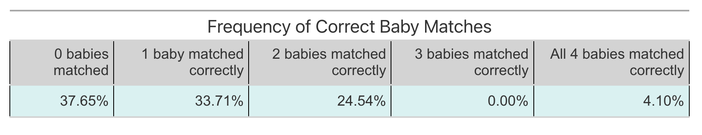

randomBabies <- function(nBabies) {
# Create a vector representing the parents
parents <- 1:nBabies
# Shuffle the babies randomly
babies <- sample(parents)
# Count how many babies are correctly returned
sum(parents == babies)
}Final Portfolio Week
Lab 8 Peer Review
Past due!
Lab 9 Peer Review
Due by Wednesday!
Creativity in Tables
Think about Font

Make Your Font Consistent

. . .
San serif fonts (e.g., calibri, arial) are more accessible than serif fonts (e.g., times new roman).
Modification to Learning Targets
None of the lab assignments had a setting where a full_join() was appropriate.
Remove the
full_join()section of yourreflection_template.qmdfile
When locating code…
- find 1-2 high quality examples (quality > quantity)
- find examples that hit on multiple learning targets at the same time
For example…
the code below could be used to demonstrate proficiency with:
- PE-2 (writing functions)
- R-2 (well documented code)
- DSSM-1 (simulating data)
Creativity
. . .
Here are some places where you can demonstrate creativity in a visualization:
- colors
- removing a legend
- (annotations or colors in title)
- non-standard plot layout
- not non-standard plots (e.g., heatmaps)
Creativity
. . .
Here are some places where you can demonstrate creativity in a table:
- font
- shading
- border
- table title / subtitle
- spanner labels
- footnotes / source notes
Revising Your Thinking
“Includes thoughtful reflections on why revisions are being requested.”
Feel free to include reflections you are proud of!
Extending Your Thinking
You are making an argument about how you have extended your thinking—“pushing yourself” looks different for everyone, but you need to justify why your code went above and beyond.
Determining Your Grade
Determining Your Grade
I believe my grade equivalent to course work evidenced below to be an __.
. . .
Your goal is to argue, convincingly and with concrete evidence, that you have met the criteria for both content proficiency, evidence of continued learning, and growth as a team member that goes with a particular grade.
Plus / Minus Modifiers
+
- You’ve met all the criteria for the letter grade along with a significant amount, but not all, of the criteria for the next letter grade up.
-
- You have met the requirements for a letter grade but only in a way that you believe is a bare minimum.
- You’ve met almost all the requirements for the letter grade except for a small number of minor criteria.
What if we don’t agree?
There are two ways this might happen.
You ask for a grade that is higher than the evidence supports.
That is, you grade yourself too highly. For example, you believe you earned an A in the course, but I do not feel the evidence you’ve provided supports this grade.
In this case, I’ll ask you to explain how you would modify a portion of the code you’ve included in your portfolio to be more efficient.
If your response communicates that you understand this key concept, I will award you the grade you proposed.
If your response communicates that you do not understand this key concept, I will award you the highest grade I believe the evidence in your portfolio supports.
What if we don’t agree?
You ask for a grade that was lower than your actual performance indicates.
That is, you “lowball” yourself, for example you say you earned a B+ when in fact I think you earned an A-.
In this case, I will tell you what grade I believe you have earned and why.
Final Portfolio Meetings
. . .
Will occur from 9am - 4pm on Tuesday of Finals Week.
(1-4pm is our original exam time)
. . .
Sign-up for your time here: link to Google Sheet
The sign-up will close at 5pm on Thursday.
Final Portfolio Deadline
The link to your Final Portfolio repository is due by Sunday at 11:59pm.
Deadline extensions will not be accepted.
If you do not submit a Final Portfolio by the deadline, I will use your Midterm Portfolio as well as completion of assignments from Week 7 - 10 to guide my decision.